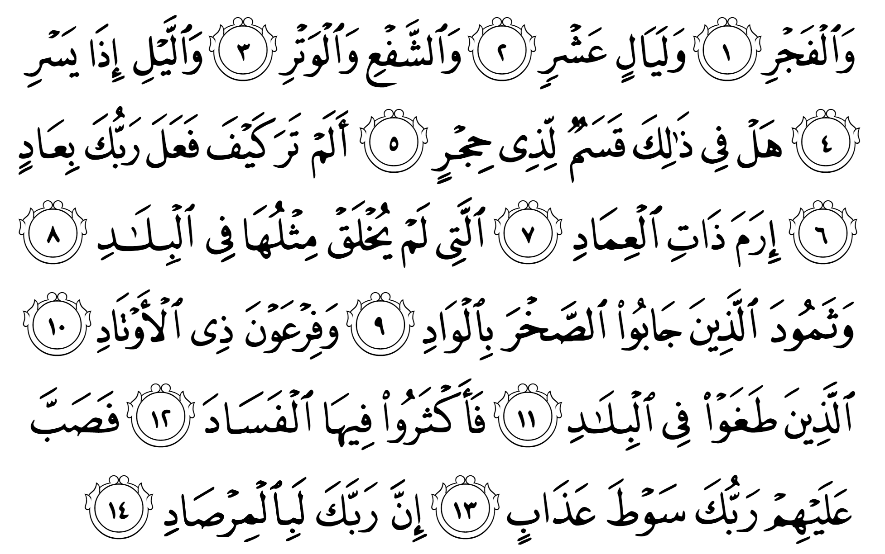
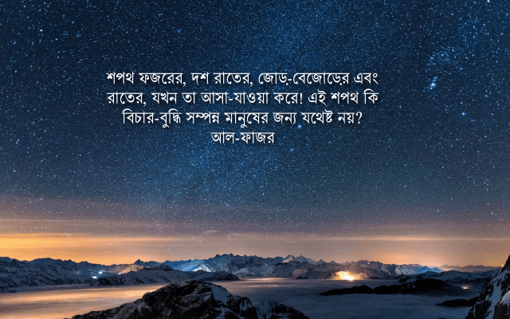

শপথ ফজরের, দশ রাতের, জোড়-বেজোড়ের এবং রাতের, যখন তা আসা-যাওয়া করে! এই শপথ কি বিচার-বুদ্ধি সম্পন্ন মানুষের জন্য যথেষ্ট নয়? তোমার রব আ’দ জাতির সাথে কী করেছিলেন দেখনি? ইরাম শহরের সাথে, যেখানে ছিল বিশাল বিশাল স্তম্ভ? যার মত কিছু অন্য কোনো দেশে সৃষ্টি হয়নি। তারপর ছামুদ জাতির সাথে, যারা উপত্যাকায় পাথর কেটে বাড়ি নির্মাণ করতো? ফিরাউনের সাথে, সেই পেরেক ওয়ালা ফিরাউন? যারা দেশে দেশে চরম অন্যায় করেছে। সব জায়গায় ব্যাপক দুর্নীতি করেছে। তারপর তোমার রব তাদের উপর আযাবের চাবুক মারলেন। নিঃসন্দেহে তোমার রব সবই লক্ষ্য রাখছিলেন। —আল-ফাজ্র ১-১৪
এই শপথ কি বিচার-বুদ্ধি সম্পন্ন মানুষের জন্য যথেষ্ট নয়?
হিজর শব্দটির অর্থ হচ্ছে ‘বাধা দেওয়া’। হিজর মানুষের সেই জ্ঞান, বুদ্ধিকে নির্দেশ করে, যা মানুষকে অন্যায় করা থেকে বাধা দেয়। মানুষের অনেক বুদ্ধি থাকতে পারে। কিন্তু সেই বুদ্ধিকে যদি লাগাম দেওয়া না হয়, তখন সেই বুদ্ধি থেকে ভয়াবহ সমস্যা তৈরি হয়। মানুষ তখন সৃষ্টিজগতের সবচেয়ে ভয়ঙ্কর প্রাণী হয়ে যায়। তাই বুদ্ধিমান হওয়া মানেই যে একজন ভালো মানুষ হওয়া, তা সবসময় ঠিক নয়।
যেমন, অনেক মেধাবী, বুদ্ধিমান কিশোর, তরুণদের আমরা দেখেছি: বড় হয়ে তাদের বুদ্ধিকে কাজে লাগায় যত সব খারাপ কাজে। এরা তাদের বুদ্ধিকে কাজে লাগিয়ে বের করে যে, চিনির সাথে চিনির মতো দেখতে সার মেশালে কম খরচে চিনির ওজন বাড়ানো যায়, ব্যবসায় লাভও হয়। তারপর এই কম দামি বিষাক্ত ঘন চিনি দিয়ে এরা মিষ্টি, কেক, বিস্কুট তৈরি করে। সেই বিষাক্ত সার দেওয়া চিনি খেয়ে যে মানুষের ভয়ঙ্কর সব সমস্যা হয়, সেটাতে তাদের কিছু যায় আসে না।
এরা বের করে যে, ফরমালিন দিয়ে যেহেতু গবেষণাগারে এবং মিউজিয়ামে উদ্ভিদ এবং প্রাণীর দেহ বছরের পর বছর সংরক্ষণ করা যায়, তাহলে ফরমালিন দিয়ে ভিজিয়ে শাকসবজি, ফলমূল, মাছ, মাংস বাজারে রাখলে তা বেশি সময় টাটকা থাকবে। কিন্তু এই ফরমালিন যে মানবদেহের জন্য বিষাক্ত, তা তাদের মাথা ব্যাথা না। এরা চায় ব্যবসায় লাভ। কার কী হলো, তাতে কী যায় আসে?
যে তার বুদ্ধিকে নিয়ন্ত্রণে রাখতে পারে, তার বুদ্ধিকে ভালো কাজে লাগাতে পারে, বুদ্ধি ব্যবহার করে নিজেকে খারাপ কাজ থেকে দূরে রাখতে পারে, কু’রআনের ভাষায় তারাই বুদ্ধিমান। কু’রআনে যত জায়গায় আক্বল, হিজর এসেছে, সব জায়গায় এমন সব মানুষদের বোঝানো হয়েছে, যাদের বিবেক তাদের বুদ্ধিকে লাগাম দিয়ে রাখে। এদের বুদ্ধি তাদের কুপ্রবৃত্তির নিয়ন্ত্রণে থাকে না। একজন মানুষের কত জ্ঞান আছে, তা মুখ্য নয়। আসল ব্যাপার হলো সে তার জ্ঞানকে কীভাবে কাজে লাগায়।
আল্লাহ تعالى এই সুরাহ’য় ফজর, দশ রাত, জোড়-বেজোড় এবং রাতের আসা-যাওয়ার শপথ করে বলেছেন যে, এগুলো বিচার-বুদ্ধি সম্পন্ন মানুষের জন্য এক একটি বিরাট নিদর্শন। এখন এই শপথগুলোর সাথে বিচার-বুদ্ধির কী সম্পর্ক?

শপথ ফজরের
ফজর বলতে কী বোঝানো হয়েছে, সে নিয়ে কয়েকটি মত রয়েছে— ১) রাতের শেষ ভাগ যখন আলো ধীরে ধীরে বাড়তে থাকে, অর্থাৎ ফজরের নামাজের সময়, ২) ফজর নামাজ এবং তার গুরুত্ব, ৩) অন্ধকার দূর হয়ে আলো চিরে আসার ধারনা অর্থাৎ সৃষ্টির সূচনা, ইত্যাদি।৭,৮,১৭,১৮,৪
ফজরের সময়টা স্থির, শান্ত সময়। এসময় প্রকৃতি আস্তে আস্তে জেগে উঠে। পশু পাখি ধীরে ধীরে কলরব শুরু করে। অল্প কিছু মানুষ জেগে উঠে। কেউ প্রার্থনায় মগ্ন হয়, কেউ বা প্রস্তুতি নেয় সামনে লম্বা দিনের। পুরো সময়টাই একটি স্নিগ্ধ, কোমল, শান্তির সময়।
প্রশ্ন হলো, এখানে বিচার-বুদ্ধি সম্পন্ন মানুষের জন্য নিদর্শন কী?
শপথ দশ রাতের
কোন দশ রাতের কথা এখানে বলা হয়েছে, তা নিয়ে কয়েকটি মত রয়েছে — ১) যুল হিজ্জাহ মাসের প্রথম দশ রাত, ২) চাদের দশ রাতের বড় হওয়া, দশ রাত উজ্জ্বল ভাবে আকাশে থাকা এবং শেষ দশ রাতে ছোট হওয়া, ৩) রমাদানের শেষ দশ রাত, ইত্যাদি। ৩,৮,১৭
আলাহ تعالى এখানে নির্দিষ্ট করে দেননি কোন দশ রাত। আয়াতের ভাষা এমন যে, কোনো এক দশ রাত। কিন্তু প্রশ্ন হলো, এখানে বিচার-বুদ্ধি সম্পন্ন মানুষের জন্য নিদর্শন কোথায়?
শপথ জোড়-বেজোড়ের
কেউ বলেছেন জোড়-বেজোড় বলতে সৃষ্টি এবং স্রস্টাকে ইঙ্গিত করা হয়েছে। একমাত্র স্রস্টাই হচ্ছেন বেজোড়, তার সমকক্ষ আর কেউ নেই। কিন্তু সকল সৃষ্টিই জোড়, তাদের সমকক্ষ বা বিপরীত কিছু না কিছু আছে।৮,১৮ আবার কেউ বলেছেন জোড়-বেজোড় দুটোই সৃষ্টির প্রতি ইঙ্গিত করে, কারণ সৃষ্টিতে জোড় এবং বেজোড় দুটোই রয়েছে।১৭ জোড় এবং বেজোড় ধারনা আল্লাহই تعالى সৃষ্টি করেছেন। গণিত দাড়িয়ে আছে এই ধারণার উপর।
আবার কেউ বলেছেন, সবচেয়ে প্রসিদ্ধ মত হচ্ছে, জোড় অর্থ যুল হিজ্জাহ মাসের দশম রাত এবং বেজোড় অর্থ নবম রাত। আবার কেউ বলেছেন, এখানে জোড় এবং বেজোড় সালাতের কথা বলা হয়েছে। আবার কেউ বলেছেন, রমাদানের শেষ রাত জোড় এবং বেজোড় হয়।১৭,৪,১৮
প্রশ্ন থেকে যায়, এখানে বিচার-বুদ্ধি সম্পন্ন মানুষের জন্য নিদর্শন কী?
শপথ রাতের, যখন তা আসা-যাওয়া করে
আল্লাহ تعالى শপথ করছেন রাতের, যখন তা আসা যাওয়া করে। রাত যেন এক পথচারী, যে মহাকাশে যাত্রা করে।
এখন, রাত আসে বা যায়, সেটাতে একজন বিচার-বুদ্ধি সম্পন্ন মানুষের জন্য কী নিদর্শন রয়েছে?
এই শপথ কি বিচার-বুদ্ধি সম্পন্ন মানুষের জন্য যথেষ্ট নয়?
আমরা ফজর কীভাবে বুঝি? আকাশের দিকে তাকিয়ে। দশ রাত কীভাবে বুঝি? চাঁদের দিকে তাকিয়ে। জোড়-বেজোড় ধারণা কীভাবে পাই?সৃষ্টিজগতের দিকে তাকিয়ে। রাতের আসা এবং যাওয়া কীভাবে বুঝি? আশেপাশে আলো-অন্ধকারের দিকে তাকিয়ে, আকাশে তারার দিকে তাকিয়ে। —এই চারটি শপথই আমাদেরকে সৃষ্টিজগতের দিকে লক্ষ্য করতে বলে। দেখায় যে, এক সুশৃঙ্খল সৃষ্টিজগতের মধ্যে আমরা বাস করি, যা বিশেষ কিছু নিয়ম এবং জোড়-বেজোড় ধারণা সম্পন্ন গণিত মেনে চলে।৩,৭
আমরা কখনও দেখি না যে, মধ্য রাতে হঠাৎ করে সূর্য উঠে পড়তে। বা পূর্ণিমার সময় চাঁদ হঠাৎ উধাও হয়ে যেতে। অথবা জোড়া সৃষ্টি হঠাৎ করে বেজোড় হয়ে যেতে। অথবা মানুষের মধ্যে জোড়-বেজোড়ের ধারনার মধ্যে কোনো ধরনের পার্থক্য হতে, বা এমন কোনো সংখ্যার ধারণা নিয়ে কেউ আসতে, যা অন্য কেউ বুঝতে পারে না। কখনও এমন হয়নি যে, রাতের দৈর্ঘ্য একদিন হঠাৎ দিগুণ হয়ে গেলো। —যেদিকেই তাকাই না কেন, সবদিকেই আমরা সুনির্দিষ্ট গাণিতিক এবং প্রাকৃতিক নিয়ম দেখতে পাই।
পুরো মহাবিশ্ব যদি সুশৃঙ্খলভাবে চলে, তাহলে এই শৃঙ্খলা আসল কোথা থেকে? শৃঙ্খলা কখনই নিজে থেকে হয় না। আমরা এক মুঠো বালিতে ফুঁ দিলে তা নিজে থেকে একটি সুন্দর বালুর ঘরে পরিণত হয় না। বরং তা আরও বিশৃঙ্খল হয়ে ছড়িয়ে যায়। তাহলে মহাবিশ্বের এত যে শৃঙ্খলা, তা কীভাবে আসলো? কোটি কোটি ইলেকট্রনের প্রতিটিতে হুবহু একই চার্জ, কোনো পার্থক্য নেই। কীভাবে সম্ভব? মহাবিশ্বের ট্রিলিয়ন ট্রিলিয়ন পরমাণুর প্রতিটির ভিতরে হুবহু একই আকর্ষণ বল মৌলিক কণিকাগুলোকে ধরে রেখেছে। এক পরমাণু থেকে অন্য পরমাণুতে একটুও কম-বেশি হয় না। কে এই নিয়মগুলো দিয়েছেন?
নিশ্চয়ই তিনিই একমাত্র সৃষ্টিকর্তা, কারণ যদি একাধিক সৃষ্টিকর্তা থাকতো, তাহলে তো আমরা একেক সৃষ্টিতে একেক নিয়ম কার্যকর হতে দেখতাম? কিন্তু আমরা তো প্রকৃতিতে কোথাও নিয়মের ব্যতিক্রম দেখতে পাই না? বরং যেদিকেই তাকাই, সেদিকেই দেখি কোনো এক অদৃশ্য হাতের নির্দেশে সবকিছু একই নিয়ম অনুসরণ করে চলছে। তাহলে সেই অদৃশ্য হাত কার?
মানুষ যদি কখনও গভীরভাবে প্রকৃতি এবং গণিত নিয়ে চিন্তা করে দেখে, সে এই সিদ্ধান্তে পৌঁছাবে যে, এগুলোর মধ্যে এক অদ্ভুত রকমের শৃঙ্খলা রয়েছে। প্রাকৃতিক নিয়মগুলোকে কোনো এক অদ্ভুদ কারণে খুবই ‘সুন্দর’ গাণিতিক সূত্র দিয়ে ব্যাখ্যা করা যায়। প্রকৃতির মুল চালিকা শক্তি এবং নিয়মগুলো বিজ্ঞানীরা আবিষ্কার করে যখন গাণিতিক সূত্র দিয়ে ব্যাখ্যা করেন, তখন সেই সূত্রগুলোর সরলতা, মাধুর্য দেখে বিজ্ঞানীরা নিজেরাই অবাক হয়ে যান। দেখে যেন মনে হয়, কেউ যেন ইচ্ছে করে এত সুন্দর সূত্র ডিজাইন করেছেন। —কে তিনি?
একজন বিচার-বুদ্ধি সম্পন্ন মানুষ এই প্রশ্নগুলোর উত্তর খুঁজে পাবে।
তোমার রব আ’দ জাতির সাথে কী করেছিলেন দেখনি? ইরাম শহরের সাথে, যেখানে ছিল বিশাল বিশাল স্তম্ভ? তাদের মত উন্নত আর কোনো জাতি সৃষ্টি হয়নি।
বিচার-বুদ্ধি লোপ পেলে মানুষ কোথায় নামতে পারে, তার উদাহরণ হলো আদ জাতি। আল্লাহ تعالى এই জাতিকে বিপুল সমৃদ্ধি এবং ক্ষমতা দিয়েছিলেন। এদের মত শক্তিশালী জাতি আর কেউ ছিল না। কেউ এদেরকে আক্রমণ করতে পারত না। বরং এরা যেখানেই যেত, ব্যাপক ধ্বংসযজ্ঞ করে আসতো। এদের একটি শহর ছিল ‘ইরাম’ নামে, যা প্রত্নতত্ত্ববিদরা বিংশ শতাব্দীতে খুঁজে পেয়েছেন বলে জানিয়েছেন। এই শহর বিপুল পরিমাণের সম্পত্তির অধিকারী হয়েছিল তাদের ভৌগলিক অবস্থানের কারণে। এটা এতই সমৃদ্ধ এক শহর ছিল যে, আল্লাহ تعالى নিজে কুর’আনে বলেছেন যে, এর মত কিছু অন্য কোথাও সৃষ্টি হয়নি।
কিন্তু এই প্রচণ্ড শক্তিশালী জাতিই পূজা করতো নিজেদের বানানো কিছু পাথরের মূর্তির। এত শক্তিশালী হয়েও এদের বিচার-বুদ্ধি এতই নিচু পর্যায়ের ছিল যে, পাথরের বানানো মূর্তির মত নিষ্ক্রিয় জড়বস্তুর পূজা করতে তাদের বিবেকে বাধত না। এই মূর্খের মত কাজকে তারা নিজেদের কাছে সঠিক বলে দাবি করতো এই বলে যে, তাদের বাপ-দাদারা করে গেছে না? একইসাথে এদের মধ্যে যারা শক্তিশালী, দুর্নীতিবাজ, তাদের অন্ধ আনুগত্য করতো।সুরা হুদ
আল্লাহ تعالى এদের ব্যাপক দুর্নীতি, অন্যায় এবং শিরকের কারণে এদের উপর এক ভয়ংকর ঘূর্ণিঝড় পাঠালেন। সাত রাত, আট দিন এই ঘূর্ণিঝড় তাদের উপরে বালুর পাহাড় তুলে, পুরো সভ্যতাকে মাটির গভীরে পুতে দিল।
তারপর ছামুদ জাতির সাথে, যারা উপত্যাকায় পাথর কেটে বাড়ি নির্মাণ করতো?
অবাধ্যতার আরেক চরম উদাহরণ হচ্ছে ছামুদ জাতি। এই জাতি প্রত্নতত্ত্ববিদদের জন্য এক বিস্ময়, কারণ হাজার বছর আগে মানুষ কীভাবে এতটা উন্নত ছিল, তারা তার হিসেব মেলাতে পারছেন না। ছামুদ জাতির কাছে এমন প্রযুক্তি ছিল যে, তারা ভীষণ শক্ত পাথরের পাহাড় কেটে তার ভেতরে প্রাসাদ, বাড়ি, বিশাল হল ইত্যাদি তৈরি করেছিল। আজকের যুগে অত্যাধুনিক ড্রিল দিয়ে যে কাজ মানুষ প্রথমবারের মতো করতে পারছে, সেই কাজ ছামুদ জাতি কীভাবে হাজার বছর আগে করে গেছে, তা এক বিরাট রহস্য। তারচেয়ে বড় রহস্য হচ্ছে কীভাবে এই শক্তিশালী জাতি রাতারাতি ধ্বংস হয়ে গেলো।
ফিরাউনের সাথে, সেই পেরেক ওয়ালা ফিরাউন? যারা দেশে দেশে চরম অন্যায় করেছিল। সব জায়গায় ব্যাপক দুর্নীতি করেছে।
ফিরাউনকে পেরেক বা কীলকের অধিকারী বলার দুটো কারণ— ১) ফিরাউন মানুষের হাতে-পায়ে পেরেক গেঁথে নির্মমভাবে শাস্তি দিত; ২) ফিরাউনের বিশাল বিশাল বাহিনী ছিল যারা কীলক দিয়ে মাটিতে তাঁবু লাগাত। সেনাবাহিনীকে অনেক সময় কীলকের সাথে তুলনা করা হয়, কারণ কীলক গেড়ে যেমন তাঁবুকে দৃঢ়ভাবে আটকে ফেলা যায়, তেমনি সেনাবাহিনী পাঠিয়ে কোনো একটা জায়গার উপর দখল নিয়ে নেওয়া যায়। ৪,৭,৮,১৭,১৮
ফিরাউনের বাহিনীর অন্যায় ইতিহাসে কুখ্যাত। এরা যেই দেশেই আক্রমণ করতে যেত, সেখানে ইতিহাসের জঘন্যতম অন্যায়গুলো করত। এরা তাদের কুকর্মের পরিণামের কোনোই পরোয়া করতো না, কারণ এরা নিজেদেরকে ঈশ্বরের সমতুল্য মনে করতো। আর মানুষ যখন নিজেকে ধরাছোঁয়ার বাইরে ঈশ্বরের সমতুল্য মনে করে, কোনো ধরনের জবাবদিহিতার উর্ধে মনে করে, অথবা মনে করে যে, সে ঈশ্বরের আদেশেই কাজ করছে, তখন মানুষের পক্ষে এমন সব জঘন্য কাজ করা সম্ভব হয়, যা অন্য কোনো মানুষ করার সাহস করবে না।
তারপর তোমার রব তাদের উপর আযাবের চাবুক মারলেন।
সাওত سَوْط অর্থ চাবুক। আল্লাহ تعالى যেন এই জাতিগুলোর উপর মহাজাগতিক আযাবের এক অপার্থিব চাবুক মারলেন, আর জাতিগুলো চুরমার হয়ে গেলো। এদের বিপুল সম্পদ, ক্ষমতা, প্রতিপত্তি, লোকবল —কোনকিছুই তাদেরকে রক্ষা করতে পারল না। এদের ধ্বংসস্তূপ দেখলে বোঝা যায় যে, এরা একসময় কী ভীষণ শক্তিশালী ছিল, আর কী ভয়ংকর মাত্রার শক্তি প্রয়োজন হয়েছে এদেরকে ধ্বংস করে দিতে।
এই অত্যন্ত শক্তিশালী জাতিগুলোকে তাদের অবাধ্যতার জন্য আল্লাহ تعالى ধ্বংস করে দিয়ে কিছু ভগ্নাবশেষ রেখে দিয়েছেন, যেন ভবিষ্যতে মানুষ দেখতে পারে যে, তাদের থেকেও শক্তিশালী জাতিকে কীভাবে তিনি تعالى রাতারাতি নিশ্চিহ্ন করে দিতে পারেন।
আজকে আমরা মনে করতে পারি: আমাদের কনক্রিটের তৈরি বাড়ি আছে শক্ত লোহার ভিত্তির উপর। এগুলোকে এত সহজে ধ্বংস করা যাবে না। আদ, ছামুদ জাতি পাহাড়ের পাথর কেটে বাড়ি বানিয়েছিল। পাহাড় নিজেই একটি অত্যন্ত মজবুত গঠন। তার উপর পাথর কেটে পাহাড়ের ভেতরে বাড়ি বানালে সেটা খোলা সমতল মাটিতে দাড়িয়ে থাকা কনক্রিটের বাড়ির থেকে অনেক বেশি সুরক্ষিত। কিন্তু তারপরেও সেগুলো টেকেনি। একটা ঘূর্ণিঝড়, একটা ভূমিকম্প, একটা আগ্নেয়গিরির বিস্ফোরণই যথেষ্ট ছিল ধূলিসাৎ করে দেওয়ার জন্য।
নিঃসন্দেহে তোমার রব সবই লক্ষ্য রাখছিলেন।
গাজা, সিরিয়া, ফিলিস্তিন, মায়ানমার, বসনিয়া, চেচনিয়া সহ সারা পৃথিবীতে মুসলিমদের উপর নিরন্তর নির্যাতন, আক্রমণ; অমুসলিমদের ব্যাপক অন্যায়, অবিচার দেখে আমরা অনেক সময় মনে করি: আল্লাহ تعالى কি সত্যিই আছেন? তিনি تعالى থাকলে মুসলিমদের উপর এত অত্যাচার হয় কীভাবে? কীভাবে একজন দয়ালু সত্তা এসব দেখেও কিছু করেন না?
আল্লাহ تعالى আদ, ছামুদ, ফিরাউনদের ঠিকই ধ্বংস করে দিলেন, কিন্তু ইসরাইল, আমেরিকাকে ধ্বংস করলেন না কেন? ক্রুসেড-এর সময় খ্রিস্টান বাহিনী যখন ফ্রান্সে আক্রমণ করে লক্ষ লক্ষ মুসলিম হত্যা করলো, তখন তিনি تعالى কিছু করলেন না কেন? চেঙ্গিস খান যখন লাখো মুসলিমকে পশুর মত নির্মমভাবে কুপিয়ে হত্যা করে রক্তের বন্যা বয়ে দিয়েছিল, তখন আল্লাহ تعالى কেন কিছুই করলেন না?
আদ, ছামুদ, ফিরাউন মানুষের উপর এরচেয়েও জঘন্য নির্যাতন করেছে। আল্লাহ تعالى তাদেরকে সময়, সুযোগ দিয়েছিলেন নিজেদেরকে সংশোধন করার জন্য। কিন্তু তারা নিজেদেরকে সংশোধন করেনি। তারপর আল্লাহ تعالى তাদেরকে ধ্বংস করে দিয়েছেন, যখন তিনি তাঁর অসীম প্রজ্ঞা দিয়ে মানবজাতির জন্য সঠিক সময় মনে করেছেন। তিনি تعالى আমাদের রব। আমাদের উপরে যত অন্যায়, অবিচার হচ্ছে, তিনি تعالى সব লক্ষ্য করছেন। অপেক্ষা শুধু সঠিক সময়ের।
একটি উপলব্ধি: শপথ ফজরের
ফজর এর সময় কে জেগে থাকে? যে তার বিচার-বুদ্ধি দিয়ে প্রবৃত্তিকে নিয়ন্ত্রণ করতে পেরেছে। যে নিজেকে রাতের বেলা নানা প্রলোভন থেকে দূরে রেখে, বুদ্ধি খাটিয়ে বের করেছে যে, রাতে আগে শুয়ে পরে ফজরের সময় ওঠাটা সবদিক দিয়ে ভালো। একজন মানুষ যখন নিয়মিত ফজরের সময় উঠে ফজরের নামাজ পড়তে পারে, তখন সে নিজের প্রবৃত্তিকে অনেকখানি জয় করে ফেলতে পারে। ঘুমের আরাম, নরম বিছানার আয়েস, রাতের প্রলোভনকে সপ্তাহে সাত দিন, বছরে তিনশ পঁয়ষট্টি দিন জয় করা সোজা কাজ নয়। এর জন্য যথেষ্ট মানসিক শক্তি দরকার।
প্রতিদিন ফজরের সময় উঠতে হলে একজনকে তার সারাদিনের রুটিনকে একটি পরিকল্পনার ছকে নিয়ে আসতে হয়। সন্ধ্যার সময় চা খাওয়া যাবে না, কারণ তাহলে রাতের ঘুম ছাড়া-ছাড়া হবে। ফজরের সময় মাথা ভার হয়ে থাকবে, নামাজে মনোযোগ থাকবে না। রাত জেগে ইসলামের জন্য পড়াশুনা বা লেকচার দেখা যাবে না, কারণ তাতে কম ঘুম হবে, ফজরের সময় নামাজে পরিষ্কার মাথা নিয়ে দাঁড়ানো হবে না। দিনের বেলা উলটো পাল্টা খাওয়া যাবে না, যেন রাতে পেটে সমস্যা না হয় এবং ফজরের সময় উঠতে সমস্যা না হয়। সন্ধ্যার পর থেকে রাতে ঘুমাতে যাওয়া পর্যন্ত একটি নির্দিষ্ট রুটিনের মধ্যে থাকতে হবে, কারণ রাতের রুটিন উল্টোপাল্টা হয়ে গেলে আর ফজরের সময় ওঠা হয়ে ওঠে না, বা উঠলেও অর্ধমৃতের মত কোনোভাবে নামাজ পড়া হয়।
—এভাবে যে নিজেকে দিনে এবং রাতে নিয়ন্ত্রণ করতে পারে নিয়মিত ফজরের সময় উঠে মানসম্পন্ন নামাজ পড়ার জন্য, সে নিজের বুদ্ধিকে ইতিমধ্যেই অনেক খারাপ কাজ থেকে দূরে রেখেছে। এধরনের মানুষদের নিজেদের উপর নিয়ন্ত্রণ আর দশ জন মানুষের মত নয়। সে ইতিমধ্যেই অনেকখানি হিজ্র অর্জন করে ফেলেছে।
[১] বাইয়িনাহ এর কু’রআনের তাফসীর। [২] ম্যাসেজ অফ দা কু’রআন — মুহাম্মাদ আসাদ। [৩] তাফহিমুল কু’রআন — মাওলানা মাওদুদি। [৪] মা’রিফুল কু’রআন — মুফতি শাফি উসমানী। [৫] মুহাম্মাদ মোহার আলি — A Word for Word Meaning of The Quran [৬] সৈয়দ কুতব — In the Shade of the Quran [৭] তাদাব্বুরে কু’রআন – আমিন আহসান ইসলাহি। [৮] তাফসিরে তাওযীহুল কু’রআন — মুফতি তাক্বি উসমানী। [৯] বায়ান আল কু’রআন — ড: ইসরার আহমেদ। [১০] তাফসীর উল কু’রআন — মাওলানা আব্দুল মাজিদ দারিয়াবাদি [১১] কু’রআন তাফসীর — আব্দুর রাহিম আস-সারানবি [১২] আত-তাবারি-এর তাফসীরের অনুবাদ। [১৩] তাফসির ইবন আব্বাস। [১৪] তাফসির আল কুরতুবি। [১৫] তাফসির আল জালালাইন। [১৬] লুঘাতুল কুরআন — গুলাম আহমেদ পারভেজ। [১৭] তাফসীর আহসানুল বায়ান — ইসলামিক সেন্টার, আল-মাজমাআহ, সউদি আরব [১৮] কু’রআনুল কারীম – বাংলা অনুবাদ ও সংক্ষিপ্ত তাফসীর — বাদশাহ ফাহাদ কু’রআন মুদ্রণ কমপ্লেক্স। [১৯] তাফসির আল-কাবির। [২০] তাফসির আল-কাশ্শাফ। [৪০৯] The People of Ad and Ubar, the Atlantis of the Sands . (2018). Web.archive.org. Retrieved 7 May 2018, from https://web.archive.org/web/20171017074505/https://www.islamicity.com/science/QuranAndScience/destruction/GeneratedFilesNoFrame/ThePeopleof145AdandUbartheAtlantisoftheSands.htm